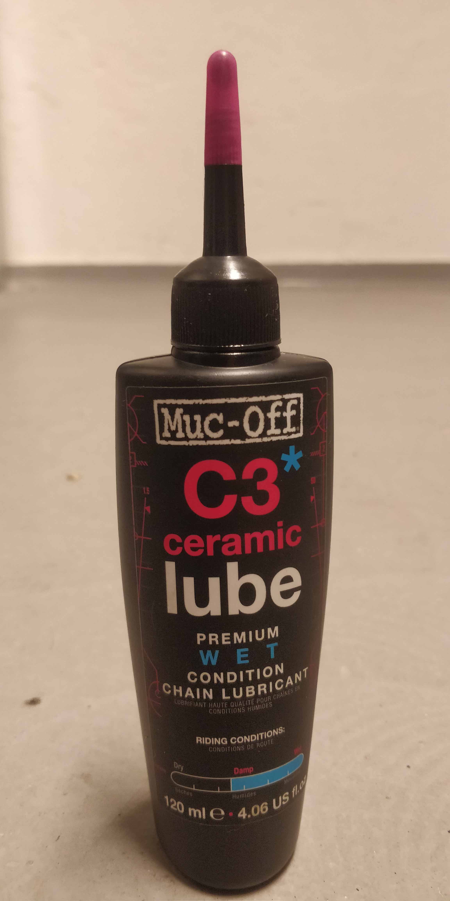
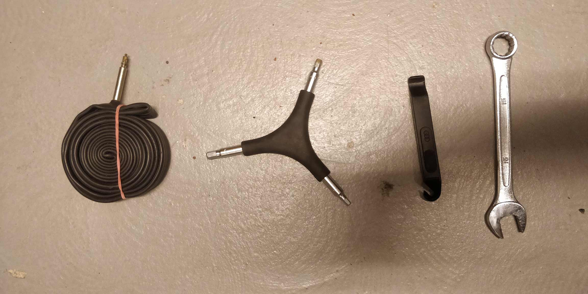

Verktyg som är bra att ha i sin lilla verkstad är Kedjefett, inte riktigt ett verktyg men lika viktigt ändå. Saker om jag tar med när jag är ute och cyklar är en extra innerslang multiverktyg med insex nycklar och en 15 nyckel för att montera av hjulen eftersom jag kör fixed. En till sak som är viktig att ha är en kedjepiska med låsringsverktyg så att man med mellanrum kan ta av sin kugg så att den inte fastnar eller blir lös.

